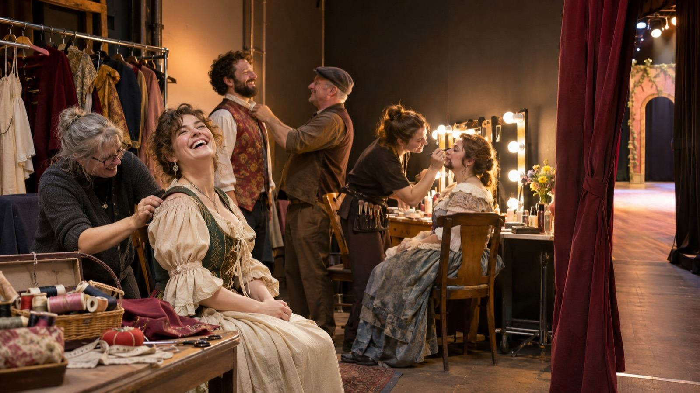

Blind Date mit einer Leiche
Wiener Neudorfer Ensemble · Teil 1

Videos von Aufführungen, Szenenfotos aus meinen eigenen Rollen, die Ensembles, die meine Stücke auf die Bühne gebracht haben, und was die Presse darüber geschrieben hat.
Das Theater ist weder eine Schulstube noch ein Priesterseminar. Die Leute sollen dort entweder lachen oder weinen. Oder beides.Carl Zuckmayer

Die Videos liegen auf YouTube. Sie werden erst geladen, wenn Sie sie anklicken.
Wiener Neudorfer Ensemble · Teil 1
Wiener Neudorfer Ensemble · Teil 2
Theaterensemble Melange
teatro allegro · Szenenausschnitte
Werksbühne Tyrolit, Schwaz
Bei „Pension Schöller“ und „Filous in Dessous“ war auf der alten Seite nicht eindeutig, welches Video zu welchem Titel gehört.
Von der Diva bis zur Nonne, von der Detektivin bis zur Hausfrau mit Revolver.
Meine eigenen Ensembles Mischkulanz, Melange und Star-Players, und Theatergruppen, die meine Stücke inszeniert haben.
Eine Auswahl an Artikeln über mich und über Aufführungen meiner Stücke, von Kärnten bis ins Elsass. Zum Lesen anklicken.
Ich freue mich über Fotos, Plakate und Presseberichte Ihrer Aufführung, und nehme sie gerne in diese Sammlung auf.